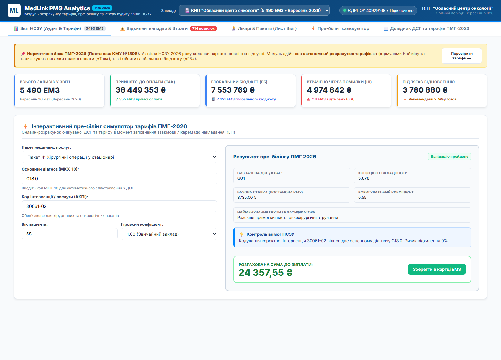
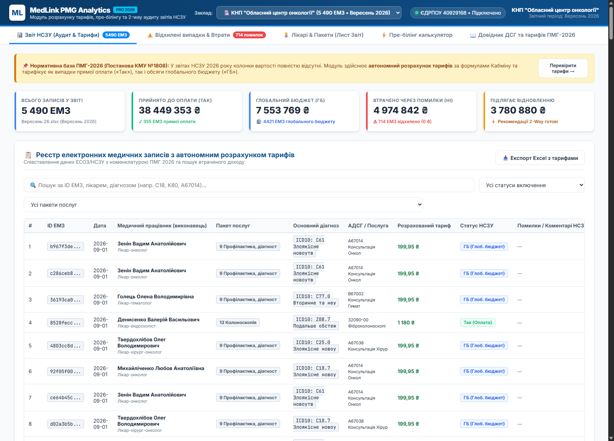
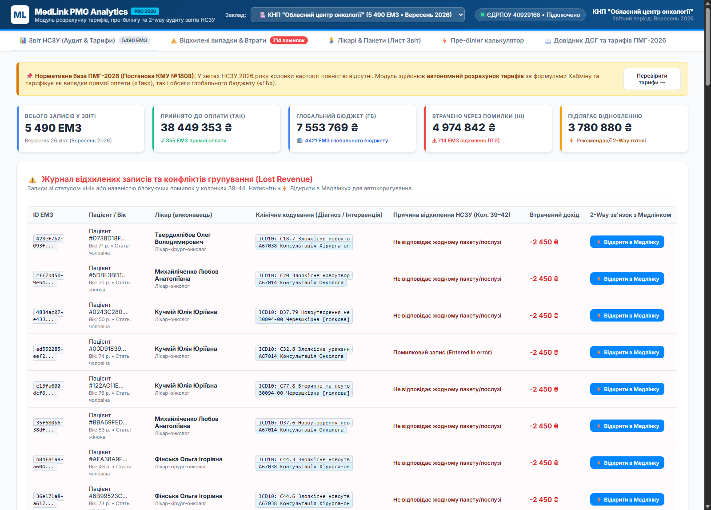
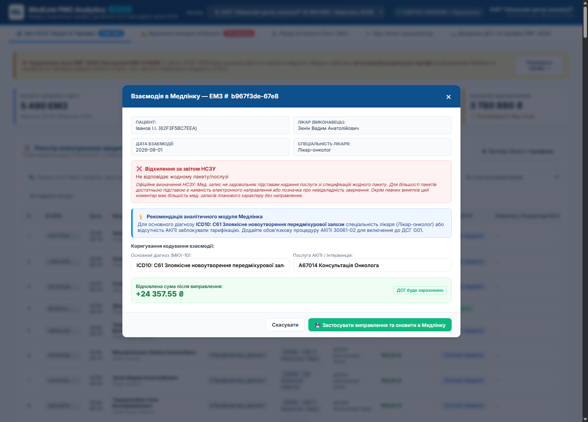
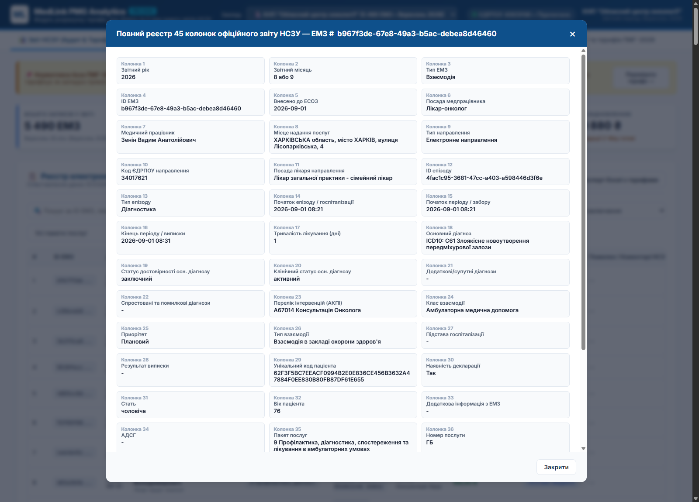

1. Передумови, аналіз реальних звітів НСЗУ та бізнес-мета проєкту
В процесі дослідження проведено детальний аудит двох реальних файлів звітності НСЗУ за 2026 рік:
- Файл 1:
Вересень 26.xlsx— КНП "Обласний центр онкології" (ЄДРПОУ 40929168), 5 490 ЕМЗ. - Файл 2:
02000334_SF_2026_08_20260910.xlsx— КНП "Дитяча клінічна лікарня Святої Зінаїди" СМР (ЄДРПОУ 02000334), 4 394 ЕМЗ.
Аудит структури підтвердив, що кожен офіційний файл НСЗУ складається рівно з 4 аркушів:
- «Розшифровка» (45 колонок): повний реєстр усіх ЕМЗ (Взаємодії, Діагностичні звіти, Процедури) з кодами діагнозів, інтервенцій АКПІ, статусом включення («Так», «ГБ», «Ні») та системними кодами помилок (колонки 38–44).
- «Пацієнти» (9 колонок): агрегований реєстр пацієнтів із хешованими ID, номерами послуг за пакетом (напр.
17.1,17.3,PA3), статусом у статистиці та переліком зв'язаних UUID медичних записів. - «Звіт»: підсумковий протокол із точними таймстемпами вивантаження, загальною статистикою закладу за пакетами, а також детальним розрізом за кожним лікарем закладу (обсяг ЕМЗ та перелік допущених помилок).
- «Опис помилок»: офіційний нормативний довідник НСЗУ із 186 визначеннями помилок та умов невідповідності (МВТН, перекриття у часі, відсутність обов'язкових послуг АКПІ, невідповідність посад тощо).
В обох реальних звітах (усі 45 колонок «Розшифровки») колонки суми до оплати, тарифу та коефіцієнтів відсутні повністю. Присутній лише текстовий статус у колонці 38 («Включення медичного запису до звіту»):
- «Так» — оплата за окремий пролікований випадок або тарифну послугу (6.5% в онкоцентрі, 30.3% у дитячій лікарні).
- «ГБ» — зараховано до виконання глобального бюджету / капітаційної ставки закладу (80.5% в онкоцентрі, 66.4% у дитячій лікарні).
- «Ні» — повна відмова в оплаті (0 грн доходу, 13.0% в онкоцентрі, 3.3% у дитячій лікарні).
За результатами нашого прямого математичного аудиту за формулами ПМГ-2026:
- У КНП "Обласний центр онкології" через статус «Ні» та помилки кодування втрачено ~6 162 000 грн (прийнято лише 426 000 грн за випадками «Так»). 93.5% потенційного додаткового доходу втрачено!
- У КНП "ДКЛ Святої Зінаїди" через статус «Ні» та блокуючі помилки втрачено ~3 674 400 грн (прийнято 1 598 400 грн за випадками «Так»). 69.7% потенційного доходу втрачено!
Головні бізнес-цілі розробки:
- Пре-білінг та онлайн-контроль у Медлінку: під час створення взаємодії лікар отримує підказку щодо очікуваної ДСГ та ризиків неотримання коштів ще ДО підписання КЕП та відправки в eHealth.
- Автономний розрахунок тарифів за ПМГ-2026: незалежний математичний модуль розрахунку точної суми кожного випадку за формулами Кабміну, що нівелює відміну виведення вартості з боку НСЗУ.
- Двосторонній зв'язок (2-Way Matching): при завантаженні звіту НСЗУ система прив'язує кожне відхилення до реального
Encounter.Idу Медлінку за колонкою 4 (ID ЕМЗ), дає рекомендацію асистента та кнопку «Виправити кодування в один клік». - Автономний аналітичний сервіс: можливість використання як у складі Медлінка, так і у вигляді окремого порталу (SaaS аналог info-pmg.com Pro).
2. Нормативна база та математична модель розрахунку тарифів ПМГ-2026
Розрахунковий движок базується на чинних нормативно-правових актах, що регулюють ПМГ у 2026 році:
- Постанова КМУ №1808 від 27.12.2024 «Деякі питання реалізації програми державних гарантій медичного обслуговування населення у 2026 році».
- Додаток 1 до Постанови №1808: Таблиця коефіцієнтів складності діагностично-споріднених груп (ДСГ) для стаціонарної допомоги (Пакети 3, 4, 47), коефіцієнти вікових категорій дітей (до 28 днів: 1.54; від 29 днів до 1 року: 1.25) та важкості травм.
- Додаток 2 до Постанови №1808: Коефіцієнти складності для операцій на відкритому серці та інтервенційної кардіології (Пакет 4).
- Наказ МОЗ / НСЗУ №377 від 15.05.2025: Таблиці співставлення ОДК (Основні діагностичні категорії) та галузеві класифікатори австралійської системи AR-DRG v7.0.
2.1. Стаціонарна та хірургічна допомога (Пакети 3, 4, 47)
Тариф випадку стаціонарного лікування визначається за формулою:
2.2. Амбулаторна допомога (Пакет 9)
2.3. Спеціалізовані пакети (Онкологія, Ендоскопія, Реабілітація)
- Пакет 17 та 38 (Хіміотерапія та онкогематологія): 17 865.00 грн (дорослий) / 90 131.00 грн (діти до 18 років). Обов'язкова наявність діагнозу C00-C97 або D00-D09, а для амбулаторії — основного діагнозу
Z51.1. - Пакет 18 (Радіологічне лікування): 54 089.00 грн (гамма-терапія / лінійний прискорювач).
- Пакет 10, 12, 13, 15 (Пріоритетна рання діагностика): Мамографія = 512.00 грн; Гастроскопія = 749.00 грн; Колоноскопія = 1 180.00 грн; Бронхоскопія = 1 167.00 грн.
- Пакети 53 та 54 (Реабілітаційна допомога): Стаціонарна = 19 776.00 грн за цикл; Амбулаторна = 10 820.00 грн за цикл за умови виконання вимог матриць АР1..АР4 та CR.
2.4. Повний реєстр 46 пакетів ПМГ-2026 та 12 клініко-економічних кластерів
На вимогу повної відповідності нормативній базі у системі імплементовано регулювання всіх 46 офіційних пакетів медичних гарантій 2026 року, згрупованих у 12 кластерів:
- Кластер 1. Первинна медична допомога: Пакет 1 (ПМД, 1 007.30 ₴/рік, капітація).
- Кластер 2. Екстрена медична допомога: Пакет 2 (ЕМД, 340.50 ₴/рік, капітація).
- Кластер 3. Спеціалізована та хірургічна допомога (ДСГ): Пакети 3 (Терапія), 4 (Хірургія), 47 (Хірургія 1-дня) — база 8 735.00 ₴, 465 ДСГ, коригувальні 0.55 / 0.60.
- Кластер 4. Пріоритетні стаціонарні пакети: Пакети 5 (Інсульт, 15 250..137 000 ₴), 6 (Інфаркт, 44 400..55 200 ₴), 7 (Пологи, 15 137..27 240 ₴), 8 (Неонатологія, 33 000..135 000 ₴), 35 (Ведення вагітності, 800 ₴/міс).
- Кластер 5. Амбулаторна допомога та онкоскринінги: Пакет 9 (148 класів, база 155 ₴), Пакети 10..15 (Мамографія, гістеро-, езофагогастро-, колоно-, цисто-, бронхоскопія: 512..1 180 ₴), Пакет 16 (Лікування безпліддя), Пакет 34 (Стоматологія, 145 ₴), Пакет 42 (Мобільна амбулаторія).
- Кластер 6. Онкологія та онкогематологія: Пакет 18 (Хіміотерапія, 17 865..35 730 ₴), Пакет 19 (Радіотерапія, 54 089..131 499 ₴), Пакет 26 (Онкогематологія, 61 200..122 400 ₴).
- Кластер 7. Реабілітаційна допомога: Пакет 25 (Стаціонарна, 19 776..33 619 ₴), Пакет 53 (Монопрофільна складна, 41 500 ₴), Пакет 54 (Амбулаторна, 10 820 ₴).
- Кластер 8. Паліативна допомога: Пакет 23 (Стаціонарна, 18 900 ₴), Пакет 24 (Мобільна, 14 200 ₴).
- Кластер 9. Психіатрія та терапія залежностей: Пакет 22 (Стаціонарна психіатрія, 13 151 ₴), Пакет 27 (Мобільна психіатрія, 10 535 ₴), Пакет 28 (ЗПТ), Пакет 30 (Первинка психіатрія, 183 ₴).
- Кластер 10. Інфекційні патології: Пакет 20 (Туберкульоз, 43 780 ₴), Пакет 21 (ВІЛ/СНІД, 2 100 ₴), Пакет 29 (Вірусні гепатити).
- Кластер 11. Високі технології та трансплантація: Пакет 43 (Гемодіаліз, 2 460 ₴/сеанс), Пакет 46 (Перитонеальний діаліз, 1 820 ₴/доба), Пакет 59 (ДРТ / ЕКЗ, 60 324 ₴), Пакет 60 (Трансплантація органів, 350 000..900 000 ₴), Пакет 61 (ТКМ / ГСК, 750 000..1 400 000 ₴).
- Кластер 12. Оборонна готовність, ВЛК та ветерани: Пакет 40 (Готовність ЗОЗ до криз, глобальна ставка), Пакет 41 (НС), Пакет 44 (Медичний огляд ВЛК, 883 ₴), Пакет 45 (Лікування військовослужбовців), Пакет 58 (Зубопротезування ветеранів, 14 984 ₴).
Деталізовані нормативні досьє, законодавчі акти та таблиці валідацій див. у Розділі 9 технічної документації ↗ та автономному браузері normative_packages/index.html ↗.
2.5. Справочник послуг (АКПІ): норми, методики та конфігуратор усіх можливих комбінацій (Delphi Re-engineering)
На основі реверс-інжинірингу класичної системи Delphi (модулі fMain.pas, d53_54.pas та таблиці правил dct_mp_service_odk_rule_detail) розширено підсистему класифікатора послуг АКПІ:
- 12 клініко-технологічних груп послуг: загальна хірургія, онкохірургія, ендоскопія, інтенсивна терапія, анестезіологія, діагностика та реабілітація.
- Паспорт послуги та клінічні норми: нормативний час виконання (хв), тип анестезії, мінімальний та максимальний термін госпіталізації (ліжко-дні), вікові цензи (мін/макс), статева специфічність, кваліфікаційні вимоги до лікаря (спеціальність та сертифікат).
- Матриця комбінацій та валідатор: перевірка комбінацій у реальному часі (обов'язкові супутні ко-реквізити, несумісні інтервенції, сумісні МКХ-10, допустимі/заборонені посади лікарів).
- Підвищувальний коефіцієнт мультихірургії (1.30): при одночасному виконанні додаткових хірургічних втручань тариф базової ДСГ помножується на коефіцієнт мультихірургії 1.30 (наприклад, 21 257.50 ₴ → 27 634.75 ₴), захищаючи лікарню від дефектури та недофінансування.
- Бібліотека еталонних комбінацій (аналог
myAddLib): збереження затверджених шаблонів комбінацій, порівняння з поточним протоколом та підсвічування різниці вартості (зелений прибуток / червоний збиток). - Наскрізний Drill-down до реальних пацієнтів та 45 колонок: прямий перехід від картки послуги та правила до таблиці виписаних ЕМЗ пацієнтів і повного аудиту аркуша «Розшифровка».
Детальний технічний опис, DDL та інтерактивний симулятор див. у
Розділі 10 технічної документації ↗
та SQL-скрипті sql/11_seed_service_combinations_and_groups.sql.
3. Реєстр бізнес-процесів системи та перехід до прототипів
Функціональна архітектура системи охоплює замкнений життєвий цикл управління фінансуванням медичного закладу в рамках ПМГ-2026: від моменту внесення взаємодії лікарем у МІС («пре-білінг») до щомісячного аудиту офіційних звітів НСЗУ, виявлення розбіжностей та оперативного виправлення помилок із ресинхронізацією в ЕСОЗ (eHealth).
Кожен процес має окрему спеціалізовану сторінку для ізольованого тестування кожної ролі, а також повністю інтегрований у головний аналітичний портал. Усі прототипи працюють локально без зовнішніх залежностей (Offline-first) у будь-якому браузері.
| Код | Назва бізнес-процесу | Хто виконує (Роль) | Нормативна база | Точка входу в Медлінку | Очікуваний бізнес-ефект | Інтерактивний прототип |
|---|---|---|---|---|---|---|
| П1 | Пре-білінг лікаря під час заповнення ЕМЗ | Лікуючий лікар (хірург, терапевт, онколог) | Постанова КМУ №1808 (Додатки 1, 2) | EncounterEdit.vue (Картка взаємодії) |
Попередження 100% технічних помилок до підписання КЕП |
Відкрити екран П1 ↗ у головному порталі |
| П2 | Імпорт та потоковий парсинг звіту НСЗУ | Головний економіст / Медичний директор | Формат вивантаження ЕСОЗ (4 аркуші, 45 колонок) | IXlsxProcessor / Модуль імпорту звітів |
Потоковий розбір 10 000+ рядків менше ніж за 2 сек |
Відкрити екран П2 ↗ у головному порталі |
| П3 | Автономний розрахунок тарифів та фінансовий аудит | Головний економіст, Начмед, Генеральний директор | Постанова КМУ №1808 (Тарифи, ДСГ, коефіцієнти) | Дашборд фінансового моніторингу ПМГ | Точний розрахунок доходу за «Так» / «ГБ» та втрат за «Ні» |
Відкрити екран П3 ↗ у головному порталі |
| П4 | Двосторонній аудит (2-Way) та журнал розбіжностей | Медичний директор, Завідувач відділення | Аркуш «Опис помилок» (186 правил НСЗУ) | Encounter.EhealthId ↔ Реєстр розбіжностей |
Миттєва локалізація втраченого доходу (Lost Revenue) |
Відкрити екран П4 ↗ у головному порталі |
| П5 | Інтерактивний асистент коригування та ресинхронізація | Лікар-експерт, Лікуючий лікар, Економіст | Регламент синхронізації з eHealth | Модальне вікно виправлення кодування | Відновлення 70–80% відхилених сум доходу закладу |
Відкрити екран П5 ↗ у головному порталі |
| П6 | Довідник нормативів ПМГ-2026 (ДСГ, Класи, Реабілітація) | Економіст, Лікарі всіх спеціальностей | Класифікатори ОДК/AR-DRG, 465 ДСГ, 148 класів | Довідкова підсистема МІС «Медлінк» | Швидкий пошук умов тарифікації, кодів АКПІ та коефіцієнтів |
Відкрити екран П6 ↗ у головному порталі |
Детальний опис та інтерактивні точки входу за процесами:
Суть процесу: У момент заповнення медичного запису лікарем в EncounterEdit.vue система у фоновому режимі перевіряє комбінацію діагнозу МКХ-10, інтервенцій АКПІ та посади лікаря.
prototype/process_1_prebilling.html • У головному порталі: prototype/index.html#process-1
Суть процесу: Потокова обробка щомісячного файлу НСЗУ (аркуші «Розшифровка» на 45 колонок, «Пацієнти», «Звіт», «Опис помилок») через NszuReportXlsxProcessor з валідацією структури без перевантаження оперативної пам'яті сервера.
prototype/process_2_upload.html • У головному порталі: prototype/index.html#process-2
Суть процесу: Оскільки НСЗУ повністю припинила виведення вартості у звітах 2026 року, модуль автономно розраховує тарифи за формулами КМУ для випадків «Так», обсягів «ГБ» та розраховує точні суми збитків за відхиленими випадками («Ні»).
prototype/process_3_financial_audit.html • У головному порталі: prototype/index.html#process-3
Суть процесу: Автоматичне співставлення кожного запису НСЗУ з внутрішньою базою Медлінка за ключем Encounter.EhealthId == ID ЕМЗ. Зведення відхилених записів у єдиний реєстр розбіжностей із категоризацією помилок за офіційним словником НСЗУ (186 правил).
prototype/process_4_discrepancies.html • У головному порталі: prototype/index.html#process-4
Суть процесу: Розумний асистент підказує лікарю або експерту точну причину відхилення (відсутність АКПІ, некоректний тип епізоду для МВТН, перекриття) та пропонує виправлення в 1 клік із розрахунком суми відновленого фінансування (+24 357.55 ₴).
prototype/process_5_correction.html • У головному порталі: prototype/index.html#process-5
Суть процесу: Повний інтерактивний довідник актуальних нормативів ПМГ-2026: фільтрація та миттєвий пошук за 465 діагностично-спорідненими групами, 148 амбулаторними класами та матрицями складності реабілітації АР1–АР4 та CR.
prototype/process_6_catalog.html • У головному порталі: prototype/index.html#process-6
4. Архітектурне рішення в системі Медлінк (evomis)
Рішення проєктується як внутрішній модуль App.PmgAnalyzer.Module (розширення існуючого App.Mdc.Module та App.XlsxAnalyzer.Module), повністю сумісний із доменною моделлю Медлінка.
| Компонент системи | Файли / Шляхи в evomis | Призначення та реалізація |
|---|---|---|
| Доменні моделі (EF Core) | src/App.Domain/Models/pmg/ |
PmgDsg, PmgDsgDiagnosis, PmgDsgService, PmgOutpatientClass, PmgRehabRule.NszuReport, NszuReportDetail, EncounterPmgDiscrepancy.
|
| Движок аналізу Excel | src/App.XlsxAnalyzer.Module/Processors/Internal/ |
Реалізація NszuReportXlsxProcessor : IXlsxProcessor.Потокове читання великих файлів (10 000+ рядків), мапінг колонок ID ЕМЗ, Основний діагноз, Інтервенції, Помилки.
|
| Розрахунковий сервіс | src/App.Business/Services/ApplicationServices/ |
PmgTariffCalculatorService:- Метод CalculateEncounterTariff(EncounterDto) (пре-білінг)- Метод ProcessNszuReportAsync(reportId) (аудит та 2-way зв'язок)
|
| API Контролери | src/App.Api/Controllers/PmgAnalyzerController.cs |
REST эндпоинты для завантаження звітів, отримання фінансової аналітики та виклику пре-валідатора. |
| Фронтенд (Quasar/Vue) | src/App.View/src/utils/mdc-helpers/src/App.View/src/components/encounters/ |
Оновлення mdcHelpers.js до нормативів ПМГ-2026.Вбудовування плашки пре-білінгу в екран лікаря EncounterEdit.vue.Окремий розділ «Фінансовий моніторинг ПМГ» для економістів. |
5. Інтерактивні макети інтерфейсу (UI/UX у стилі Медлінка)
Макет 1. Онлайн-індикатор пре-білінгу в картці лікаря (MedLink Encounter View — Процес 1)
Відображається безпосередньо в процесі заповнення взаємодії лікарем. При зміні діагнозу або послуги система миттєво інформує про статус тарифікації та ризики відхилення НСЗУ:

Макет 2. Аналітичний дашборд звіту НСЗУ для економіста та начмеда (Процес 3)
Забезпечує ретроспективний аудит після імпорту Excel-звіту від НСЗУ (45 колонок, розрахунок сум, статус «Так» / «ГБ» / «Ні»):

Макет 3. Журнал відхилених записів та втраченого доходу (Lost Revenue — Процес 4)
Фільтрація випадків з нульовим тарифом, аналіз причин відхилень (МВТН, перекриття, помилки групування) та розрахунок суми збитку:

Макет 4. Модальне вікно 2-Way коригування взаємодії з AI асистентом (Процес 5)
Відкривається в один клік з таблиці відхилень. Дані підтягуються з Медлінка за ID ЕМЗ:

Макет 5. Повний інспектор 45 колонок офіційного вивантаження НСЗУ (Процес 3)
Деталізований структурний перегляд усіх атрибутів запису (клінічні дати, посади, направлення, JSON парних конфліктів):

6. Специфікація бази даних та міграцій
Вилучені дані структуровано у реляційну базу даних pmg_database.sqlite (127 МБ, 285 554 індексованих зв'язків). Вона переноситься у PostgreSQL Медлінка через наступні таблиці EF Core:
7. Етапи впровадження, терміни та очікуваний ROI
| Етап | Зміст робіт | Термін | Результат |
|---|---|---|---|
| Етап 1 | Перенесення структури з pmg_database.sqlite у міграції EF Core evomis. |
1 тиждень | Актуальні таблиці ПМГ-2026 у базі даних Медлінка. |
| Етап 2 | Реалізація процесора NszuReportXlsxProcessor у App.XlsxAnalyzer.Module. |
1.5 тижні | Автоматичний парсинг звітів НСЗУ (будь-якого обсягу) з розрахунком сум. |
| Етап 3 | Реалізація 2-way зв'язку за emz_id та модального вікна виправлення в Медлінку. |
1.5 тижні | Перехід від звіту до взаємодії лікаря та автокоригування кодування. |
| Етап 4 | Інтеграція віджета пре-білінгу в App.View (Quasar/Vue) при створенні взаємодії. |
1 тиждень | Попередження помилок лікаря в момент внесення медичного запису. |
| Етап 5 | Пілотне тестування на даних КНП "ОЦО", навчання економістів, реліз. | 1 тиждень | Повнофункціональна експлуатація в лікарні. |
Для медичного закладу середнього та великого рівня (1 500 – 4 000 взаємодій на місяць) усунення помилок кодування та відновлення відхилених випадків дозволяє повертати від 800 000 до 3 200 000 грн додаткового доходу щомісяця. Термін окупності модуля — перший звітний період.